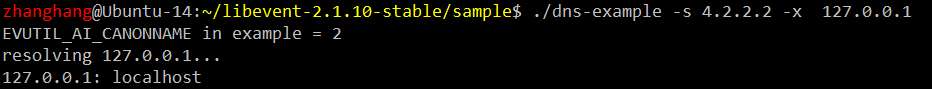

/*
This example code shows how to use the high-level, low-level, and
server-level interfaces of evdns.
XXX It's pretty ugly and should probably be cleaned up.
*/
#include <event2/event-config.h>
/* Compatibility for possible missing IPv6 declarations */
#include "../ipv6-internal.h"
#include <sys/types.h>
#ifdef EVENT__HAVE_UNISTD_H
#include <unistd.h>
#endif
#ifdef _WIN32
#include <winsock2.h>
#include <ws2tcpip.h>
#include <getopt.h>
#else
#include <sys/socket.h>
#include <netinet/in.h>
#include <arpa/inet.h>
#endif
#include <event2/event.h>
#include <event2/dns.h>
#include <event2/dns_struct.h>
#include <event2/util.h>
#ifdef EVENT__HAVE_NETINET_IN6_H
#include <netinet/in6.h>
#endif
#include <stdio.h>
#include <stdlib.h>
#include <string.h>
#define u32 ev_uint32_t
#define u8 ev_uint8_t
static const char *debug_ntoa(u32 address)
{
static char buf[32];
u32 a = ntohl(address);
evutil_snprintf(buf, sizeof(buf), "%d.%d.%d.%d",
(int)(u8)((a>>24)&0xff),
(int)(u8)((a>>16)&0xff),
(int)(u8)((a>>8 )&0xff),
(int)(u8)((a )&0xff));
return buf;
}
static void main_callback(int result, char type, int count, int ttl,
void *addrs, void *orig) {
char *n = (char*)orig;
int i;
for (i = 0; i < count; ++i) {
if (type == DNS_IPv4_A) {
printf("%s: %s\n", n, debug_ntoa(((u32*)addrs)[i]));
} else if (type == DNS_PTR) {
printf("%s: %s\n", n, ((char**)addrs)[i]);
}
}
if (!count) {
printf("%s: No answer (%d)\n", n, result);
}
fflush(stdout);
}
static void gai_callback(int err, struct evutil_addrinfo *ai, void *arg)
{
const char *name = arg;
int i;
struct evutil_addrinfo *first_ai = ai;
if (err) {
printf("%s: %s\n", name, evutil_gai_strerror(err));
}
if (ai && ai->ai_canonname)
printf(" %s ==> %s\n", name, ai->ai_canonname);
for (i=0; ai; ai = ai->ai_next, ++i) {
char buf[128];
if (ai->ai_family == PF_INET) {
struct sockaddr_in *sin =
(struct sockaddr_in*)ai->ai_addr;
evutil_inet_ntop(AF_INET, &sin->sin_addr, buf,
sizeof(buf));
printf("[%d] %s: %s\n",i,name,buf);
} else {
struct sockaddr_in6 *sin6 =
(struct sockaddr_in6*)ai->ai_addr;
evutil_inet_ntop(AF_INET6, &sin6->sin6_addr, buf,
sizeof(buf));
printf("[%d] %s: %s\n",i,name,buf);
}
}
if (first_ai)
evutil_freeaddrinfo(first_ai);
}
static void evdns_server_callback(struct evdns_server_request *req, void *data)
{/*一个DNS服务回调函数*/
int i, r;
(void)data;
/* dummy; give 192.168.11.11 as an answer for all A questions,
* give foo.bar.example.com as an answer for all PTR questions. */
for (i = 0; i < req->nquestions; ++i) {//解析用户发起的DNS请求
u32 ans = htonl(0xc0a80b0bUL);//将ip地址192.168.11.11解析为网络字节序
if (req->questions[i]->type == EVDNS_TYPE_A &&
req->questions[i]->dns_question_class == EVDNS_CLASS_INET) {
printf(" -- replying for %s (A)\n", req->questions[i]->name);
r = evdns_server_request_add_a_reply(req, req->questions[i]->name,
1, &ans, 10);//对于A记录，调用此函数，解析IPV4地址
if (r<0)
printf("eeep, didn't work.\n");
} else if (req->questions[i]->type == EVDNS_TYPE_PTR &&
req->questions[i]->dns_question_class == EVDNS_CLASS_INET) {
printf(" -- replying for %s (PTR)\n", req->questions[i]->name);
r = evdns_server_request_add_ptr_reply(req, NULL, req->questions[i]->name,
"foo.bar.example.com", 10);//对于PTR记录，调用此函数，解析处对应PTR字符串
if (r<0)
printf("ugh, no luck");
} else {
printf(" -- skipping %s [%d %d]\n", req->questions[i]->name,
req->questions[i]->type, req->questions[i]->dns_question_class);
}
}
r = evdns_server_request_respond(req, 0);
if (r<0)
printf("eeek, couldn't send reply.\n");
}
static int verbose = 0;
static void logfn(int is_warn, const char *msg) {
if (!is_warn && !verbose)
return;
fprintf(stderr, "%s: %s\n", is_warn?"WARN":"INFO", msg);
}
int main(int c, char **v) {
struct options {
int reverse;
int use_getaddrinfo;
int servertest;
const char *resolv_conf;
const char *ns;
};
struct options o;
int opt;
struct event_base *event_base = NULL;
struct evdns_base *evdns_base = NULL;
memset(&o, 0, sizeof(o));
if (c < 2) {
fprintf(stderr, "syntax: %s [-x] [-v] [-c resolv.conf] [-s ns] hostname\n", v[0]);
fprintf(stderr, "syntax: %s [-T]\n", v[0]);
return 1;
}
while ((opt = getopt(c, v, "xvc:Ts:g")) != -1) {
switch (opt) {
case 'x': o.reverse = 1; break;
case 'v': ++verbose; break;
case 'g': o.use_getaddrinfo = 1; break;
case 'T': o.servertest = 1; break;
case 'c': o.resolv_conf = optarg; break;
case 's': o.ns = optarg; break;
default : fprintf(stderr, "Unknown option %c\n", opt); break;
}
}
#ifdef _WIN32
{
WSADATA WSAData;
WSAStartup(0x101, &WSAData);
}
#endif
event_base = event_base_new();//创建一个event_base
evdns_base = evdns_base_new(event_base, EVDNS_BASE_DISABLE_WHEN_INACTIVE);//创建一个evdns_base
evdns_set_log_fn(logfn);
if (o.servertest) {//命令行选项-T如果被设置
evutil_socket_t sock;
struct sockaddr_in my_addr;
sock = socket(PF_INET, SOCK_DGRAM, 0);//创建udp套接字
if (sock == -1) {
perror("socket");
exit(1);
}
evutil_make_socket_nonblocking(sock);//设置非阻塞
my_addr.sin_family = AF_INET;
my_addr.sin_port = htons(10053);
my_addr.sin_addr.s_addr = INADDR_ANY;
if (bind(sock, (struct sockaddr*)&my_addr, sizeof(my_addr))<0) {
perror("bind");
exit(1);
}
evdns_add_server_port_with_base(event_base, sock, 0, evdns_server_callback, NULL);
/*创建一个DNS服务器，开始监听DNS请求，访问此服务器的任何一个ip的10053号端口，都会被认为请求DNS服务，收到一个DNS查询，会调用evdns_server_callback回调函数，传入NULL作为回调参数*/
}
if (optind < c) {
int res;
#ifdef _WIN32
if (o.resolv_conf == NULL && !o.ns)
res = evdns_base_config_windows_nameservers(evdns_base);
else
#endif
if (o.ns)//命令行设置-s选项
res = evdns_base_nameserver_ip_add(evdns_base, o.ns);//加入ns字符串(应为某域名服务器地址）到evdns_base
else//如果不设置-s选项，则扫描配置文件进行解析
res = evdns_base_resolv_conf_parse(evdns_base,
DNS_OPTION_NAMESERVERS, o.resolv_conf);
if (res < 0) {
fprintf(stderr, "Couldn't configure nameservers");
return 1;
}
}
printf("EVUTIL_AI_CANONNAME in example = %d\n", EVUTIL_AI_CANONNAME);
for (; optind < c; ++optind) {
if (o.reverse) {//命令行选项-x被选择
struct in_addr addr;
if (evutil_inet_pton(AF_INET, v[optind], &addr)!=1) {//传入需要解析的ip地址
fprintf(stderr, "Skipping non-IP %s\n", v[optind]);
continue;
}
fprintf(stderr, "resolving %s...\n",v[optind]);
evdns_base_resolve_reverse(evdns_base, &addr, 0, main_callback, v[optind]);//将传入的ip地址解析为域名
} else if (o.use_getaddrinfo) {//命令行设置-g选项
struct evutil_addrinfo hints;
memset(&hints, 0, sizeof(hints));
hints.ai_family = PF_UNSPEC;
hints.ai_protocol = IPPROTO_TCP;
hints.ai_flags = EVUTIL_AI_CANONNAME;
fprintf(stderr, "resolving (fwd) %s...\n",v[optind]);
evdns_getaddrinfo(evdns_base, v[optind], NULL, &hints,
gai_callback, v[optind]);//将传入的域名解析为ip地址
} else {//如果两项都不选个，则默认将传如的域名解析为ipv4地址
fprintf(stderr, "resolving (fwd) %s...\n",v[optind]);
evdns_base_resolve_ipv4(evdns_base, v[optind], 0, main_callback, v[optind]);
}
}
fflush(stdout);
event_base_dispatch(event_base);
evdns_base_free(evdns_base, 1);
event_base_free(event_base);
return 0;
}
所以这个程序大致分为三块：
第一块对应命令行参数"T"，如果选择了此参数，将会创建一个DNS服务器，由于该服务器并没有建立域名和IP地址的映射，这一采用两个简单的对应来模仿一个真正的DNS服务器，用户发送DNS请求到此服务器，回调函数会被调用，函数对域名进行解析成对应ip，并将解析结果送回给用户。
第二块与命令行参数"s"和"c"对应，如果选择参数s，就不要选c，s后紧跟域名服务器地址，c后则指定一个DNS的配置文件。
第三块是接着第二块的，选择命令行参数x，将其后命令行参数中的ip转换成对应的域名，命令行参数g,将其后命令行参数中的域名转换成对应ip地址。
如果这两个参数都不选，而直接跟需要解析的域名，则直接将域名解析为ipv4地址。
接下来是一系列的测试：
域名服务器：4.2.2.2，需要解析的ip地址：127.0.0.1



配置文件/etc/resolv.conf

同上解析：


最后不跟s和g参数：

默认只解析为ipv4，没有ipv6地址